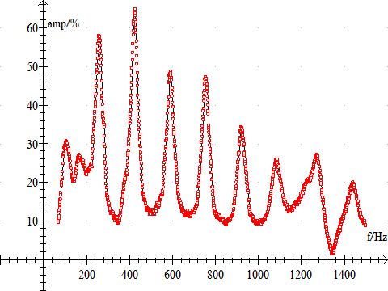
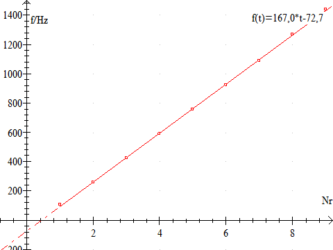

, hvor t
er temperaturen i °C.
, hvor t
er temperaturen i °C.Formålet er at undersøge stående bølger i et resonansrør, samt at bestemme lydens fart i atmosfærisk luft.
Til forsøget benyttes PC'ens lydkort, eller en tonegenerator. Som tonegenerator kan FD4E fra IMPO, Funktionsgenerator fra SF eller FNG120 fra Elcanic benyttes. Det nemmeste er, at benytte PC'en lydkort. Et eller flere paprør, mikrofon og højttaler.
Hvis paprøret er halvåbent, anbringes mikrofonen i bunden af røret og højttaleren nogle få cm fra og vinkelret på den åbne ende. Er røret åbent, anbringes mikronen et stykke inde i røret. Man kan prøve sig frem med forskellige positioner.
Der laves et sweep fra 50 Hz til 1200 Hz i spring på 1 Hz og tiden for hver frekvens sættes til = 0.1 s. Lav indledende forsøg med spring på fx 5 Hz indtil lydstyrken er indstillet til en passende styrke. Styrken må ikke overstige 100 %, for så skæres resonanstoppene væk og frekvenserne kan ikke bestemmes.

I eksemplet er rørlængden L = 1,002 meter og rørdiameteren d = 7,0 cm og stuetemperaturen t = 24 °C.
De tilhørende resonansfrekvenser bestemmes, fx maksimum funktionen i Datalyse.
Når resonansfrekvenserne f1, f2, f3,…er bestemt, afbildes disse som funktion af numrene 1, 2, 3...
|
Nr |
f/Hz |
 |
|
1,0 |
107,2 |
|
|
2,0 |
260,1 |
|
|
3,0 |
424,2 |
|
|
4,0 |
590,5 |
|
|
5,0 |
756,9 |
|
|
6,0 |
923,7 |
|
|
7,0 |
1086,9 |
|
|
8,0 |
1270,3 |
|
|
9,0 |
1439,3 |
|
v = f·l = f·2·(L + d) = 2·f(L + d)
taleksempel: v = 2·167,0 Hz·(1,002 m + 0,34·0,07m) = 342,6 m/s.
Her er mundingsusikkerheden sat til 0,34 gange rørets diameter.
Lydens hastighed i luft kan beregnes vha. formlen
, hvor t
er temperaturen i °C.
Med t = 24 °C fås, v = 345,6 m/s.
Der er ikke nogen teoretisk formel for mundingsusikkerhed. Det er en eksperimentelt bestemt størrelse og man kan finde alt mellem 0,3 gange rørets diameter til 0,5 gange rørets diameter på internettet.
Prøv, at beregne mundingsusikkerheden ved at sætte de to formler for lydhastigheden lig hinanden. (facit: 0,47)
Forsøget gentages med paprør med andre længder og andre diametre.